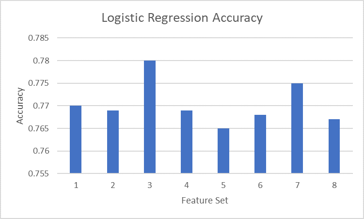
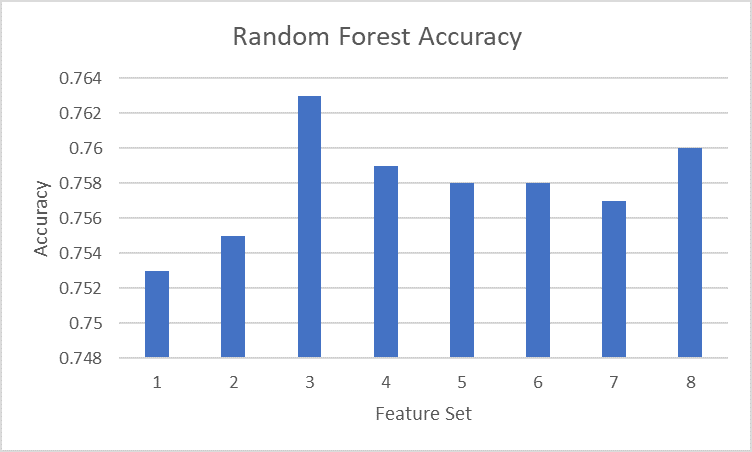
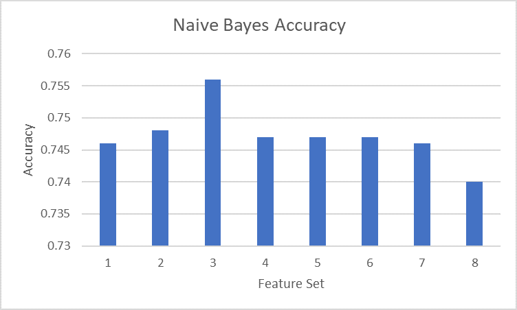
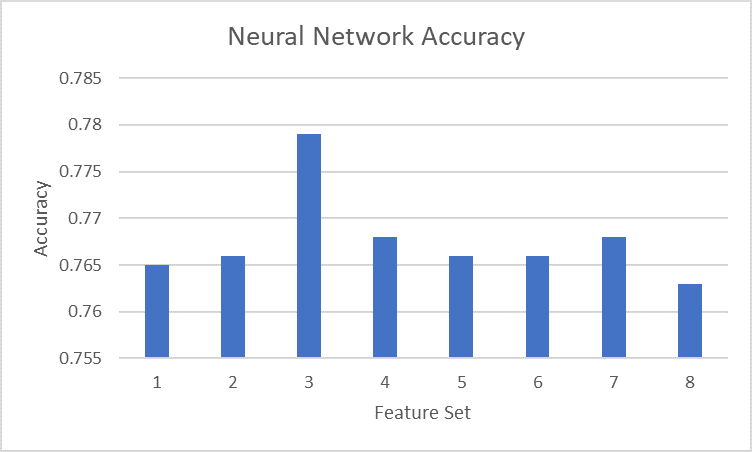
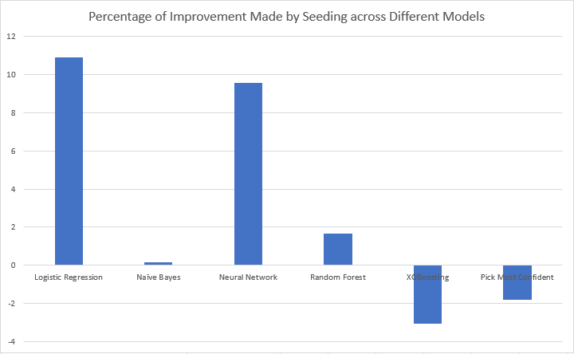
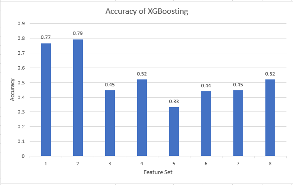
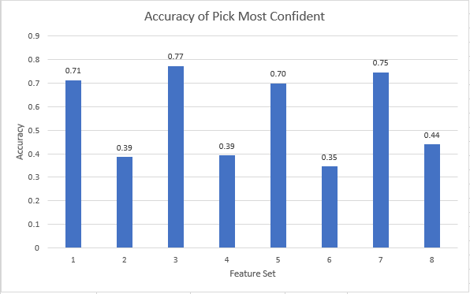

Introduction and Motivation
The March Madness Tournament is the biggest college basketball tournament in America. Millions of people fill out brackets in hopes of correctly predicting the tournament and winning competitions and bets. However, in all the years the tournament has occurred, not a single person has created the perfect bracket yet.
Being able to predict a tournament correctly would be revolutionary in the world of sports betting. It would also allow insight in basketball analysis. If some stats are more important than others and lead to more wins on average, coaches would know what the best way is to practice. Basketball is an extremely complicated sport where all sorts of upsets could happen. By using machine learning techniques, such as neural networks and random forests, we hope to find what causes a team to push through a tournament and win it all.
Dataset
The dataset was acquired from Kaggle's 2019 March Madness competition. The dataset had recorded games from 1985-current and included regular season as well as tournament games, totaling to over 88000 games. The dataset included 14 features such as free throws made, steals, and offensive rebounds. For each game, the stats for each of those features was recorded and used in our analysis. Fortunately, most the data was already quantified so we did not have to do it ourselves. The only data we had to quantify was the location of the game. We did this by having -1 represent an away game, 0 a neutral game, and 1 a home game.
Our models used the following features for each team:
- Points Allowed
- Points Scored
- Field Goals Made
- Field Goals Attempted
- 3 Pointers Made
- Offensive Rebounds
- Defensive Rebounds
- Assists
- Location of the Game (Home, Away, or Neutral)
- Personal Fouls
- Steals
- Blocks
- Turnovers
- Free Throws Made
The different sets of features we ran our models with are listed below:
| Feature Set | Features |
|---|---|
| 1 |
|
| 2 |
|
| 3 |
|
| 4 |
|
| 5 |
|
| 6 |
|
| 7 |
|
| 8 |
|
Approach
We evaluated all the games using different subsets of features. We grouped features based on related statistics. For example, feature set 3 contains primarily defensive statistics such as defensive rebounds, steals, blocks, and fouls. We used sets of features that we thought would perform the best and compared the results against other sets. To train our model, we gave it data for games from 1985 to 2018 and had our models predict the outcomes. To make our 2019 March Madness predictions, we fed our models each competing team's regular season average data coming into the competition. Then we had the models predict every possible matchup and generate a bracket.
The different supervised learning models we used were Logistic Regression, Random Forests, Naive Bayes, and Neural Networks. Additionally, we used XGBoost as a means of increasing the accuracy of our results as well as incorporating a new feature, seeding, when we construct our bracket. Since we had multiple models that worked well, we decided to implement a new method which would pick the most confident choice out of all the models.
To check the success of our models, we will have the models generate brackets and calculate the number of points that bracket would have earned used the 1-2-4-8-16-32 method. This method assigns 1 point for each correct prediction in the first round, 2 points for each correct prediction in the second round and so on with 32 points being awarded for predicting the winner of the entire competition. In 2018, the average bracket entered in the NCAA's official competition scored 57 out of a possible 192 points. We set a target of 100 points for our models.
Logistic RegressionLogistic Regression is a discriminative model that calculates the probability of a data point being in a specific class, in this case the probability of a team winning or losing. |
Random ForestsRandom Forests is an ensemble method performed by bagging multiple random decision trees. Bagging combines multiple decision trees to reduce the final variance which should improve the accuracy of the model. |
Naive BayesNaive Bayes is a generative model working under the assumption that features are independent and classifies the data regardless of correlations between features. |
Neural NetworksNeural Networks use a multitude of different nodes that sum up a series of weights for all the features to produce an output. |
Extreme Gradient Boosting (XGBoost)
XGBoost is an ensemble learning method similar to random forests in that it uses decision trees but uses gradient boosting. Gradient boosting sequentially adds trained predictors and assigns them weights and updates the model it is creating using gradient descent. It helps to minimize both bias and variance by using a multitude of decision trees and has historically been considered one of the best models to use when using machine learning to generate predictions. This is due to XGBoost's build-in cross validation and it's use of both LASSO and Ridge regression to prevent overfitting.
While our XGBoosting models were all able to perform very well in the training, they tended to perform towards the middle of the pack when generating a bracket for the 2019 March Madness competition. We believe this might be due to the fact that we train and test our model based on a mix of data from 1985 to 2019 (not including the 2019 March Madness competition). However, the way basketball has play was evolved over time. For example, the NCAA did not universally adopt the 3 point line until 1986 while 3 pointers are now considered one of the best and most important shots in basketball. So while our model did a very good job of predicting the test data, it was unable to account for the ways basketball has evolved when making it's predictions for the 2019 March Madness competition.
Pick Most Confident (Our own ensemble Method)
We wrote a script that would compare bracket predictions from our best models, which were logistic regression and neural networks. The script would compare the predictions in the two models and choose the prediction that had higher certainty, meaning the difference between winning rate of the two teams. The reason behind such decision was that the two models, logistic regression and neural networks had similar accuracy so we tested if combining the two models would improve our accuracy. The log loss of the model did not change much but the brackets have improved accuracy by an average of 2%.
Seeding
Upsets in basketball occur when a higher seeded team loses to a much worse team. Of the 63 games played over the course of each tournament since 1985, there has been on average 12 upsets per tournament. Due to this, we created a higher threshold for lower seeded teams to win; teams that are lower seeded need to have higher than a 50% chance to win in order to move on in the bracket.
Our implementation of seeding has been proven to be quite useful. Given a equal probability distribution (which scored 12 points for its prediction), the seeding implementation predicted a bracket that scored 76. That's roughly a 500% improvement! Our 5 highest scoring brackets all used seeding and there was a 5.4% increase in the average points of the brackets going from unseeded to seeded.
Results
Seeding
Unfortunately, the effects of seeding isn't necessarily positive and depends on the model it is applied to. It was observed that for ensemble methods such as XGBoosting or our Pick Most Confident method, the seeding had negative effects. WHY?________________. Outside of the ensemble methods, we also noticed a trend that the degree to the improvement in accuracy made by the seeding is affected by the initial accuracy of the model. WHY?____This is a result of our algorithm making a decision based on the probabilities the model give, which means if the model gives inaccurate probabilities, then our seeding implementation will make a worse decision.

XG Boosting

Combining our models: Pick Most Confident

Overall ResultS
We evaluated each model using the log-loss for the 2018-2019 March Madness tournament as well as how many points the bracket would generate in the NCAA competition. Logistic Regression, along with Neural Networks, performed the best out of the first four techniques and usually had a very close accuracy with Neural Networks. This is most likely the case because of the Neural Network's own logistic regression it uses to calculate the weights. Out of all the feature sets, Naive Bayes consistently performed the worst and had the worst accuracy on the training data. Most notably, the classifier was extremely confident in all of its predicted matchups, even though it predicted many of them incorrectly. Random Forests consistently performed worse than both Neural Networks and Logistic Regression but better than Naive Bayes.
Our 5 best brackets all scored 120 points or above which was far above the 2018 average of 57 points and in addition, 36 of our 96 brackets reached our target and scored over 100 points. Our best bracket, using Pick Most Confident and Seeding for feature set 7, produced 124 points, which could be enough to win a few bets or competitions but is still far from the perfect score of 192. Due to the point system awarding more points in the later rounds, just predicting the winner grants 63 points. While our model does predict the correct winner, it would need to perform even better to predict the final game.
Future Steps
Since our model has data from 1985 onwards, popular strategies may have changed and skewed the data. Our model could value data from more recent seasons more than older seasons. Also, this could be put in practice for individual seasons. However, upsets are still fairly hard to predict. Some teams could perform choke or have important players get injured which would end their tournament run. Using extra features such as player experience or tendency to under perform may help in predicting those upsets. An additional ML technique we could use is Node Regression. Node Regression slightly modifies Logistic Regression and uses it in the training of Neural Networks.